<title>VRAM Sherpa Direction Boards</title>
<meta name="claude:viewport-fit-sides" content="cover">
<meta name="description" content="Three visual directions for the VRAM Sherpa UI/UX overhaul, at 390 and 1280 px in light and dark.">
<link rel="preconnect" href="https://fonts.googleapis.com"><link rel="preconnect" href="https://fonts.gstatic.com" crossorigin>
<link rel="stylesheet" href="https://fonts.googleapis.com/css2?family=Schibsted+Grotesk:wght@400;500;600;700;800&display=swap">
<style>
/* Layout: one long comparison page. Sticky jump bar, the current UI first, then one section per direction (rationale and facts left, brand sheet right, phones, then desktops). */
:root{--bg:#F4F6F8;--surface:#FFFFFF;--fg:#141A20;--muted:#4F5B66;--line:#CBD3DB;--accent:#1D4ED8;--accent-ink:#FFFFFF;--warn:#9A2A22;--warn-bg:#FDECEA;--ok:#0B5E47;--font:"Schibsted Grotesk",system-ui,-apple-system,"Segoe UI",sans-serif}
@media (prefers-color-scheme: dark){:root:not([data-theme="light"]){--bg:#0F1419;--surface:#171E26;--fg:#E8EDF2;--muted:#9AA7B4;--line:#33404D;--accent:#8CABFF;--accent-ink:#0B1020;--warn:#FFA79F;--warn-bg:#3A1C1B;--ok:#7FE0BB;color-scheme:dark}}
:root[data-theme="dark"]{--bg:#0F1419;--surface:#171E26;--fg:#E8EDF2;--muted:#9AA7B4;--line:#33404D;--accent:#8CABFF;--accent-ink:#0B1020;--warn:#FFA79F;--warn-bg:#3A1C1B;--ok:#7FE0BB;color-scheme:dark}
*{box-sizing:border-box}
body{background:var(--bg);color:var(--fg);font-family:var(--font);font-size:16px;line-height:1.55;margin:0}
.wrap{max-width:1240px;margin:0 auto;padding-left:max(16px,env(safe-area-inset-left,0px));padding-right:max(16px,env(safe-area-inset-right,0px))}
a{color:var(--accent);text-underline-offset:3px}
a:focus-visible{outline:3px solid var(--accent);outline-offset:2px;border-radius:3px}
h1,h2,h3,p,dl,dd,figure{margin:0}
h1,h2{text-wrap:balance;line-height:1.1;letter-spacing:-.015em}
body::before{content:"";position:fixed;inset:0 0 auto;height:env(safe-area-inset-top,0px);z-index:10;background:var(--surface)}
.bar{position:sticky;top:env(safe-area-inset-top,0px);z-index:9;background:var(--surface);border-bottom:1px solid var(--line)}
.bar .wrap{display:flex;flex-wrap:wrap;align-items:center;gap:4px 20px;min-height:52px}
.bar b{font-weight:800;margin-right:auto}
.bar a{display:inline-flex;align-items:center;min-height:44px;padding:0 4px;font-weight:600;text-decoration:none;color:var(--fg)}
.bar a:hover{text-decoration:underline}
.intro{padding-block:44px 28px;display:grid;gap:14px;max-width:78ch}
.intro h1{font-size:clamp(32px,5vw,52px);font-weight:800}
.intro p{font-size:18px;color:var(--muted)}
.intro .ask{color:var(--fg);font-weight:600}
.sec-h{font-size:28px;font-weight:800;margin-bottom:6px}
.sec-p{color:var(--muted);max-width:70ch;margin-bottom:18px}
.facts{display:grid;grid-template-columns:repeat(auto-fit,minmax(220px,1fr));gap:12px;margin-bottom:20px}
.fact{background:var(--warn-bg);border-radius:10px;padding:14px 16px;min-width:0}
.fact b{display:block;font-size:26px;line-height:1.1;color:var(--warn);font-variant-numeric:tabular-nums}
.fact span{font-size:15px;color:var(--fg)}
.row{display:grid;gap:20px;margin-top:20px}
.phones{grid-template-columns:repeat(2,minmax(0,380px));justify-content:start}
.desks{grid-template-columns:repeat(2,minmax(0,1fr))}
.fr{min-width:0;display:grid;gap:8px}
.fr figcaption{font-weight:700;font-size:14px;color:var(--muted)}
.scroll{border:1px solid var(--line);border-radius:10px;overflow:auto;background:var(--surface)}
.phones .scroll{max-height:820px}
.shot{display:block}
.shot img{display:block;width:100%;height:auto}
.cur{padding-bottom:44px}
.cur .phones{grid-template-columns:repeat(2,minmax(0,380px))}
.dir{padding-block:44px;border-top:2px solid var(--fg)}
.dir-head{display:grid;gap:6px;margin-bottom:22px}
.dir-head h2{font-size:clamp(28px,4vw,40px);font-weight:800}
.one{font-size:18px;color:var(--muted);max-width:70ch}
.dir-body{display:grid;grid-template-columns:minmax(0,1fr) minmax(0,1fr);gap:28px;align-items:start}
.why{display:grid;gap:16px;min-width:0}
.why>p:first-child{max-width:62ch}
dl{display:grid;gap:10px}
dl>div{display:grid;grid-template-columns:150px minmax(0,1fr);gap:4px 14px;padding-top:10px;border-top:1px solid var(--line)}
dt{font-weight:700;font-size:14px;color:var(--muted)}
dd{min-width:0}
.links{display:flex;flex-wrap:wrap;gap:4px 20px;font-weight:600}
.brand .scroll{max-height:640px}
.cmp{padding-block:44px;border-top:2px solid var(--fg)}
.tbl{overflow-x:auto;border:1px solid var(--line);border-radius:10px;background:var(--surface)}
table{border-collapse:collapse;width:100%;min-width:720px;font-size:15px}
th,td{text-align:left;vertical-align:top;padding:12px 14px;border-top:1px solid var(--line)}
thead th{border-top:0;font-size:14px;color:var(--muted)}
tbody th{font-weight:700}
td{font-variant-numeric:tabular-nums}
.notes{display:grid;gap:12px;margin-top:22px;max-width:80ch;padding:0;list-style:none}
.notes li{padding-left:0}
.notes b{font-weight:700}
footer{padding-block:36px 56px;color:var(--muted);font-size:14px}
@media (max-width:900px){.dir-body{grid-template-columns:minmax(0,1fr)}.desks{grid-template-columns:minmax(0,1fr)}dl>div{grid-template-columns:minmax(0,1fr)}}
@media (max-width:620px){.phones,.cur .phones{grid-template-columns:minmax(0,1fr)}}
@media (prefers-reduced-motion:reduce){*{scroll-behavior:auto!important}}
html{scroll-behavior:smooth;scroll-padding-top:64px}
</style>

<nav class="bar" aria-label="Jump to"><div class="wrap"><b>VRAM Sherpa boards</b><a href="#today">Today</a><a href="#direction-a">A Basecamp</a><a href="#direction-b">B Altimeter</a><a href="#direction-c">C Expedition</a><a href="#compare">Compare</a></div></nav>

<header class="wrap intro">
  <h1>Three directions for the VRAM Sherpa overhaul</h1>
  <p>Each board shows the results page for 24 GB at a 4k context, with real models and figures: search, the answer, Top Picks, three model cards with the fit gauge and quantisation switcher, and the footer. All three are built from plain HTML and CSS, so the mockups are what the Jinja templates would render.</p>
  <p class="ask">Pick one at Gate 2, or name a mix (for example, B's cards with A's header). Round 2 then covers every screen and state in the chosen direction.</p>
</header>

<main class="wrap">
<section class="cur" id="today">
  <h2 class="sec-h">Today's page</h2>
  <p class="sec-p">The same query on the running app, first screen at each width. It is the baseline the three directions are measured against.</p>
  <div class="facts">
    <div class="fact"><b>540 px</b><span>page width in a 390 px window, so the phone page scrolls sideways</span></div>
    <div class="fact"><b>2800 px</b><span>where the first card starts on a phone (target 1688 px)</span></div>
    <div class="fact"><b>1147 px</b><span>where the first card starts at 1280 px (target 800 px)</span></div>
  </div>
  <div class="row phones">
    <figure class="fr "><figcaption>Phone 390 px, light</figcaption><div class="scroll"><a class="shot " href="before/results-390-light.png" target="_blank" rel="noopener">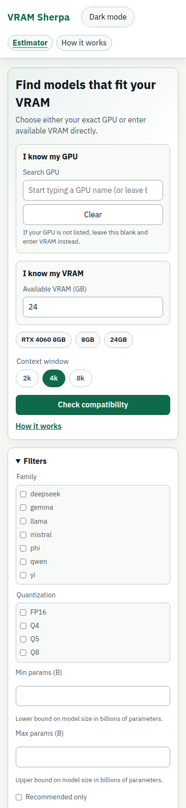</a></div></figure>
    <figure class="fr "><figcaption>Phone 390 px, dark</figcaption><div class="scroll"><a class="shot " href="before/results-390-dark.png" target="_blank" rel="noopener">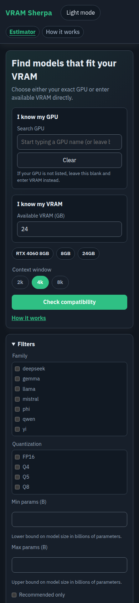</a></div></figure>
  </div>
  <div class="row desks">
    <figure class="fr "><figcaption>Desktop 1280 px, light</figcaption><div class="scroll"><a class="shot " href="before/results-1280-light.png" target="_blank" rel="noopener">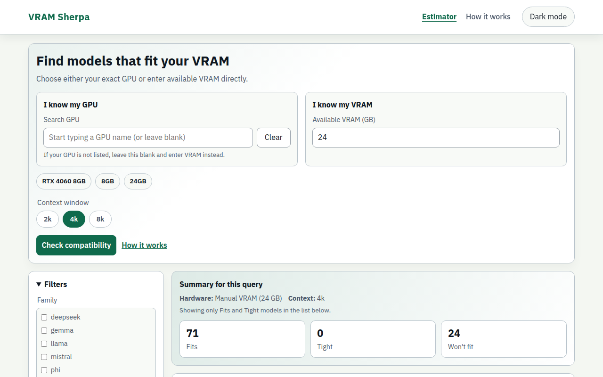</a></div></figure>
    <figure class="fr "><figcaption>Desktop 1280 px, dark</figcaption><div class="scroll"><a class="shot " href="before/results-1280-dark.png" target="_blank" rel="noopener">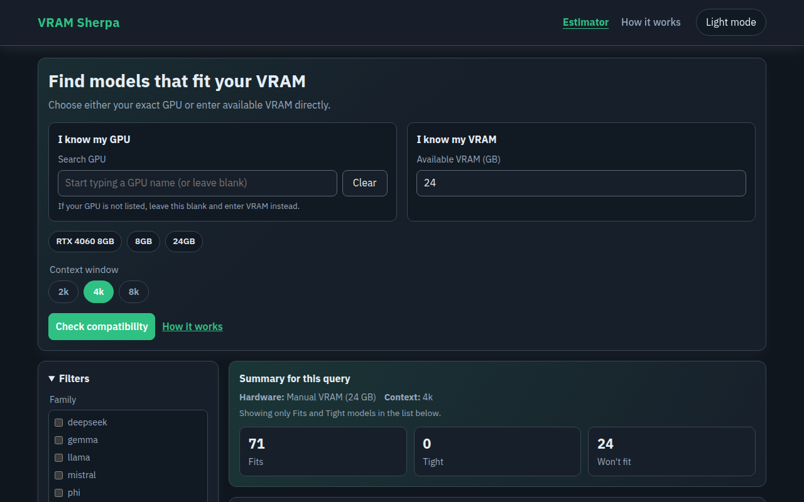</a></div></figure>
  </div>
</section>

<section class="dir" id="direction-a">
  <div class="dir-head">
    <h2>A. Basecamp</h2>
    <p class="one">A calm field guide. Big serif answer, ruled rows instead of boxes, contour lines for place.</p>
  </div>
  <div class="dir-body">
    <div class="why">
      <p>The answer is typeset first and large, and the cards become ruled rows on the page instead of a stack of boxes. That answers "too dense" by removing containers, not content. A serif headline, faint contour lines and a cairn mark give it an identity a default dashboard does not have. On a phone every row is one column with a four-up quantisation switcher at 44 px, and filters fold behind one Filters (0) control.</p>
      <dl>
        <div><dt>Type</dt><dd>Young Serif + Hanken Grotesk</dd></div>
        <div><dt>Mood</dt><dd>Editorial, quiet, trustworthy</dd></div>
        <div><dt>Top Picks</dt><dd>Above the cards, three columns on desktop, compact rows on phone (Q-1 a)</dd></div>
        <div><dt>First card starts at</dt><dd>752 px on desktop, 1409 px on phone</dd></div>
        <div><dt>Watch out for</dt><dd>Least distinctive of the three on a quick glance; the serif does most of the work. Needs a tight hero to keep the first card inside 800 px with Top Picks above it (verdict ends at 785 px).</dd></div>
      </dl>
      <p class="links"><a href="mockups/direction-a-home.html" target="_blank" rel="noopener">Open the live mockup</a> <a href="mockups/direction-a-brand.html" target="_blank" rel="noopener">Open the brand sheet</a></p>
    </div>
    <figure class="fr brand"><figcaption>Brand sheet: logo, favicon, tokens, contrast, type</figcaption><div class="scroll"><a class="shot " href="direction-a-brand-1280.png" target="_blank" rel="noopener">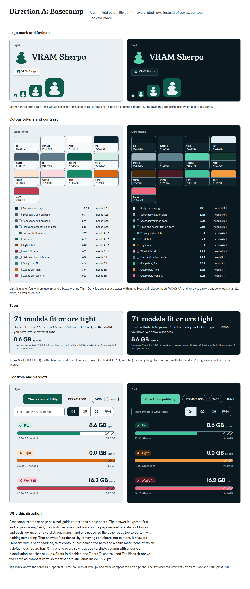</a></div></figure>
  </div>
  <div class="row phones">
    <figure class="fr "><figcaption>Phone 390 px, light</figcaption><div class="scroll"><a class="shot " href="direction-a-home-390-light.png" target="_blank" rel="noopener">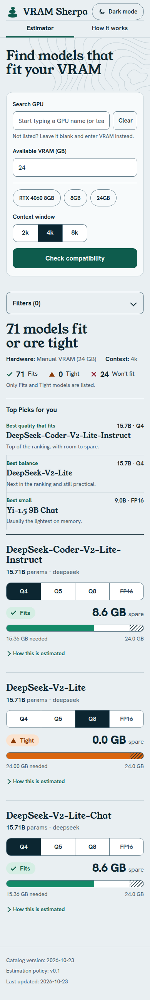</a></div></figure>
    <figure class="fr "><figcaption>Phone 390 px, dark</figcaption><div class="scroll"><a class="shot " href="direction-a-home-390-dark.png" target="_blank" rel="noopener">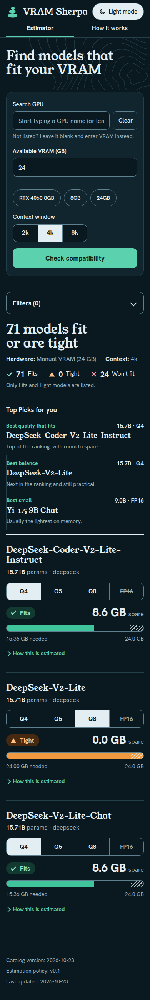</a></div></figure>
  </div>
  <div class="row desks">
    <figure class="fr desk"><figcaption>Desktop 1280 px, light</figcaption><div class="scroll"><a class="shot " href="direction-a-home-1280-light.png" target="_blank" rel="noopener">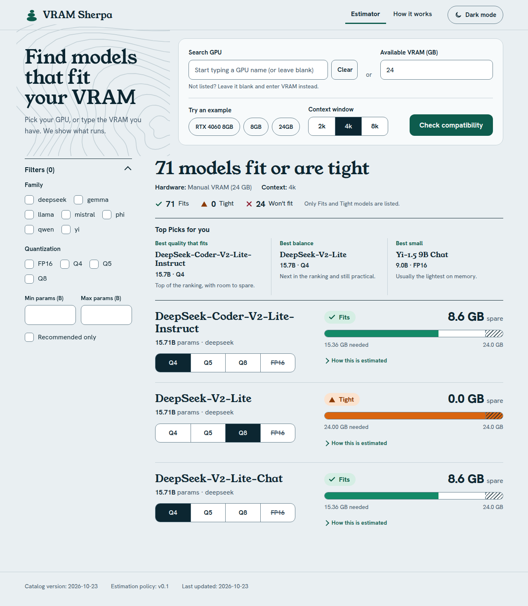</a></div></figure>
    <figure class="fr desk"><figcaption>Desktop 1280 px, dark</figcaption><div class="scroll"><a class="shot " href="direction-a-home-1280-dark.png" target="_blank" rel="noopener">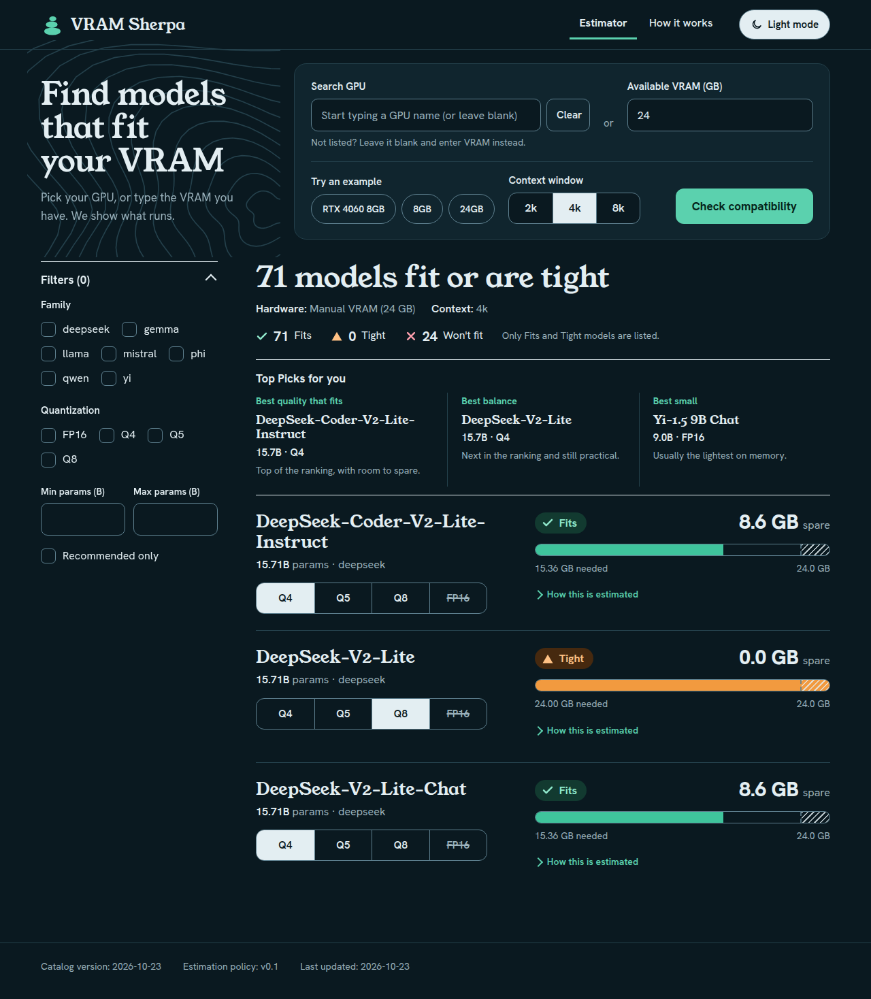</a></div></figure>
  </div>
</section>
<section class="dir" id="direction-b">
  <div class="dir-head">
    <h2>B. Altimeter</h2>
    <p class="one">An instrument panel. Dark first, segmented gauges, big condensed readouts, a quiet toolbar.</p>
  </div>
  <div class="dir-body">
    <div class="why">
      <p>A model card reads like an instrument: one large margin readout, a verdict tag, and a segmented gauge where the hatched band is the reserve. The control deck is one row, filters are collapsed at every width, and Top Picks sit in a side rail on desktop and fold into one disclosure on a phone, so nothing stands between the headline and the first card. It is the shortest page on a phone and the most technical in character.</p>
      <dl>
        <div><dt>Type</dt><dd>Saira (one family, two widths)</dd></div>
        <div><dt>Mood</dt><dd>Technical, precise, dark-first</dd></div>
        <div><dt>Top Picks</dt><dd>Sticky side rail on desktop; a collapsed Top Picks for you disclosure on phone (Q-1 c)</dd></div>
        <div><dt>First card starts at</dt><dd>642 px on desktop, 1002 px on phone</dd></div>
        <div><dt>Watch out for</dt><dd>Dark-first leans on a developer audience; light theme works but is less characterful. Filters hidden on desktop by default may bother people who filter every time.</dd></div>
      </dl>
      <p class="links"><a href="mockups/direction-b-home.html" target="_blank" rel="noopener">Open the live mockup</a> <a href="mockups/direction-b-brand.html" target="_blank" rel="noopener">Open the brand sheet</a></p>
    </div>
    <figure class="fr brand"><figcaption>Brand sheet: logo, favicon, tokens, contrast, type</figcaption><div class="scroll"><a class="shot " href="direction-b-brand-1280.png" target="_blank" rel="noopener">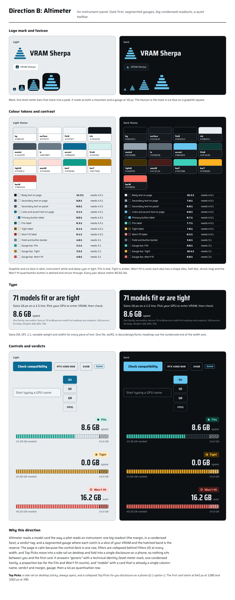</a></div></figure>
  </div>
  <div class="row phones">
    <figure class="fr "><figcaption>Phone 390 px, light</figcaption><div class="scroll"><a class="shot " href="direction-b-home-390-light.png" target="_blank" rel="noopener">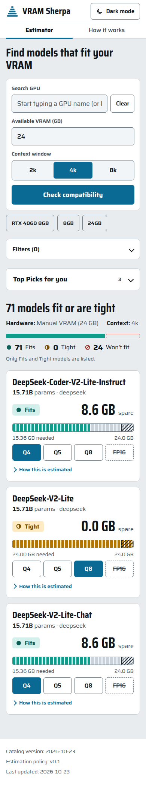</a></div></figure>
    <figure class="fr "><figcaption>Phone 390 px, dark</figcaption><div class="scroll"><a class="shot " href="direction-b-home-390-dark.png" target="_blank" rel="noopener">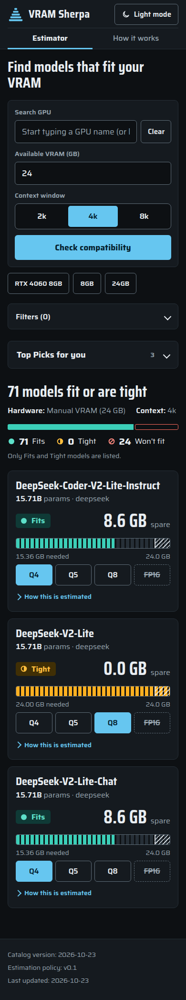</a></div></figure>
  </div>
  <div class="row desks">
    <figure class="fr desk"><figcaption>Desktop 1280 px, light</figcaption><div class="scroll"><a class="shot " href="direction-b-home-1280-light.png" target="_blank" rel="noopener">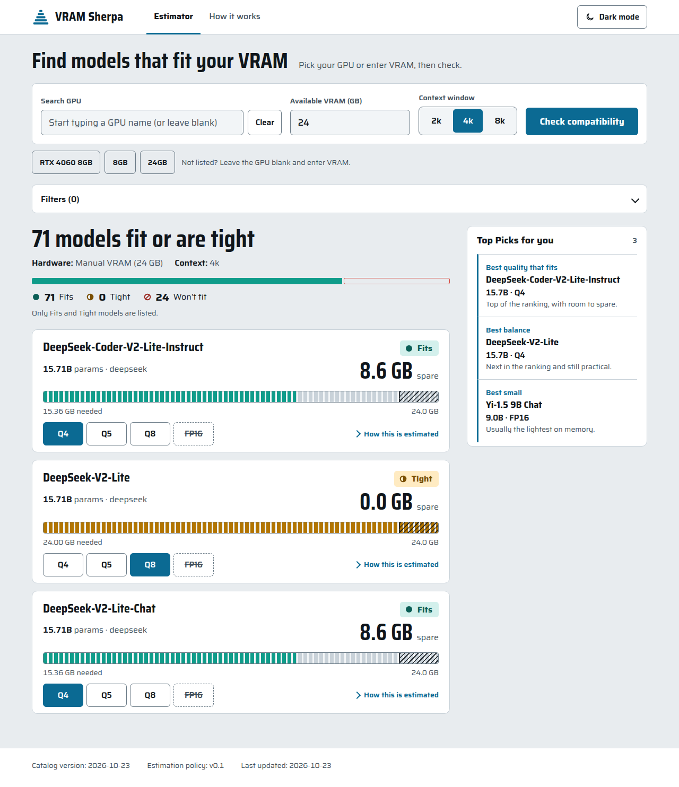</a></div></figure>
    <figure class="fr desk"><figcaption>Desktop 1280 px, dark</figcaption><div class="scroll"><a class="shot " href="direction-b-home-1280-dark.png" target="_blank" rel="noopener">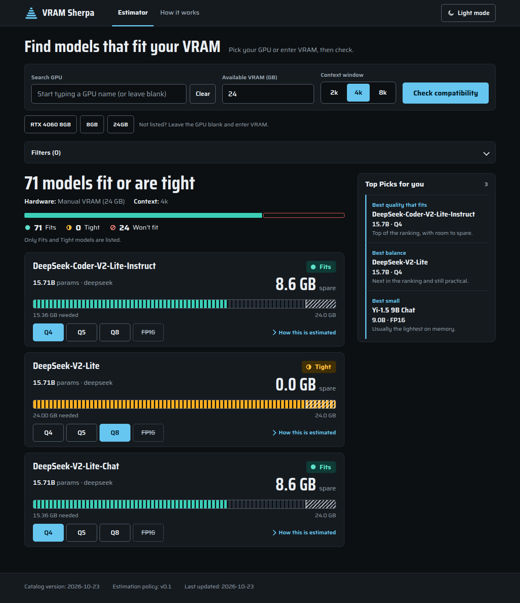</a></div></figure>
  </div>
</section>
<section class="dir" id="direction-c">
  <div class="dir-head">
    <h2>C. Expedition</h2>
    <p class="one">Bold colour blocks. A cobalt hero, a three-step form, the verdict painted across the card.</p>
  </div>
  <div class="dir-body">
    <div class="why">
      <p>The verdict becomes the loudest thing on the page: the right half of each card is painted mint, yellow or pink with the label, margin and gauge inside, and a shape beside the label confirms it without colour. The form is three numbered steps (hardware, context, check), which it really is. Hard-edged shadows make every control look pressable, and tap targets are the largest of the three.</p>
      <dl>
        <div><dt>Type</dt><dd>Archivo (one family, wide and heavy)</dd></div>
        <div><dt>Mood</dt><dd>Loud, friendly, confident</dd></div>
        <div><dt>Top Picks</dt><dd>A cobalt band after the first cards (Q-1 b)</dd></div>
        <div><dt>First card starts at</dt><dd>668 px on desktop, 1234 px on phone</dd></div>
        <div><dt>Watch out for</dt><dd>The loudest option, and the longest page on a phone (3083 px). Pane colour uses CSS :has(), so the build needs a server-side class for older Safari. The gauge relies on its ink outline for 3:1 contrast.</dd></div>
      </dl>
      <p class="links"><a href="mockups/direction-c-home.html" target="_blank" rel="noopener">Open the live mockup</a> <a href="mockups/direction-c-brand.html" target="_blank" rel="noopener">Open the brand sheet</a></p>
    </div>
    <figure class="fr brand"><figcaption>Brand sheet: logo, favicon, tokens, contrast, type</figcaption><div class="scroll"><a class="shot " href="direction-c-brand-1280.png" target="_blank" rel="noopener">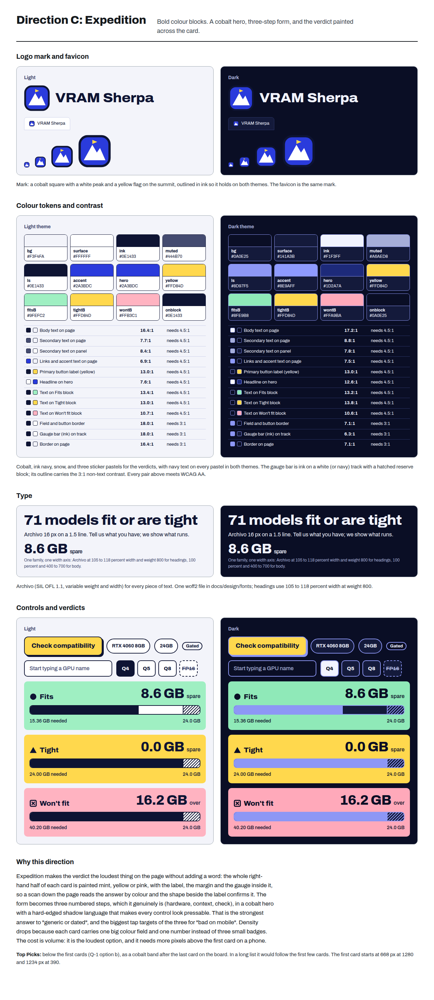</a></div></figure>
  </div>
  <div class="row phones">
    <figure class="fr "><figcaption>Phone 390 px, light</figcaption><div class="scroll"><a class="shot " href="direction-c-home-390-light.png" target="_blank" rel="noopener">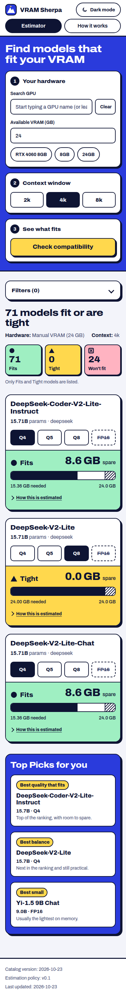</a></div></figure>
    <figure class="fr "><figcaption>Phone 390 px, dark</figcaption><div class="scroll"><a class="shot " href="direction-c-home-390-dark.png" target="_blank" rel="noopener">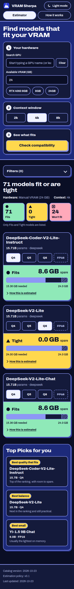</a></div></figure>
  </div>
  <div class="row desks">
    <figure class="fr desk"><figcaption>Desktop 1280 px, light</figcaption><div class="scroll"><a class="shot " href="direction-c-home-1280-light.png" target="_blank" rel="noopener">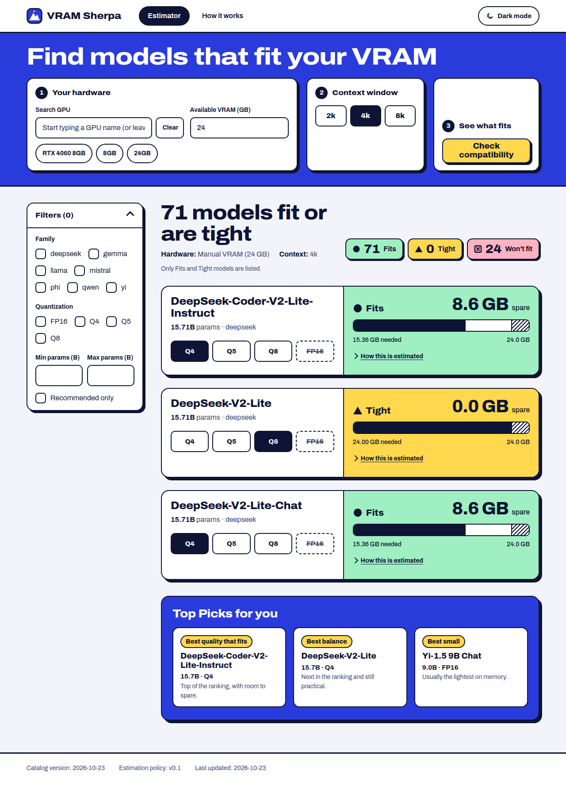</a></div></figure>
    <figure class="fr desk"><figcaption>Desktop 1280 px, dark</figcaption><div class="scroll"><a class="shot " href="direction-c-home-1280-dark.png" target="_blank" rel="noopener">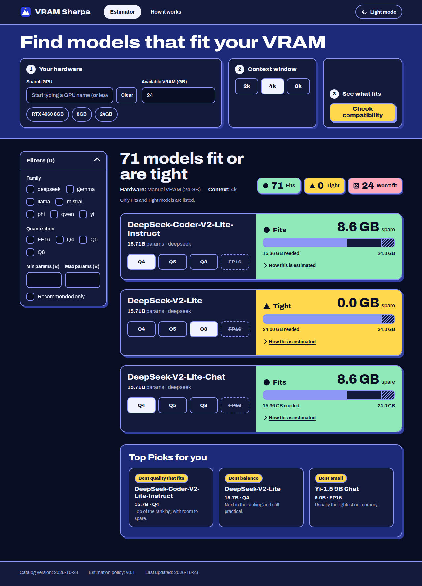</a></div></figure>
  </div>
</section>
<section class="cmp" id="compare">
  <h2 class="sec-h">Side by side</h2>
  <p class="sec-p">The first card figure is where the first model name starts on the 24 GB, 4k query. The targets are 800 px on desktop and 1688 px on a phone (R-069).</p>
  <div class="tbl"><table>
    <thead><tr><th>Direction</th><th>Type</th><th>Top Picks</th><th>First card, 1280 px</th><th>First card, 390 px</th></tr></thead>
    <tbody><tr><th scope="row"><a href="#direction-a">A. Basecamp</a></th><td>Young Serif + Hanken Grotesk</td><td>Above the cards, three columns on desktop, compact rows on phone (Q-1 a)</td><td>752 px</td><td>1409 px</td></tr><tr><th scope="row"><a href="#direction-b">B. Altimeter</a></th><td>Saira (one family, two widths)</td><td>Sticky side rail on desktop; a collapsed Top Picks for you disclosure on phone (Q-1 c)</td><td>642 px</td><td>1002 px</td></tr><tr><th scope="row"><a href="#direction-c">C. Expedition</a></th><td>Archivo (one family, wide and heavy)</td><td>A cobalt band after the first cards (Q-1 b)</td><td>668 px</td><td>1234 px</td></tr><tr><th scope="row">Today</th><td>IBM Plex Sans</td><td>Above the cards</td><td>1147 px</td><td>2800 px</td></tr></tbody>
  </table></div>
  <ul class="notes">
    <li><b>Top Picks (Q-1).</b> A puts them above the cards, B in a side rail that folds on a phone, C after the first cards. Above the cards only fits the 800 px target because A's hero is one compact row; a form error, filter chips or a GPU message would push the first card past it.</li>
    <li><b>Contrast (R-077).</b> All text pairs pass 4.5:1 and all borders and gauge parts pass 3:1 in both themes, checked from the tokens. B's Tight bar in the light theme was darkened to reach 3:1. C's pastel verdict fills measure about 1.4:1 against the track on their own, so the gauge bar is ink with a 2 px outline.</li>
    <li><b>Tap size (R-070).</b> Every control is at least 44 px at 390 px in all three. On desktop the filter checkboxes in A and C are 36 to 38 px tall, which the phone-only rule allows.</li>
    <li><b>Verdict size (R-069).</b> In every card the verdict label and the margin are larger than the other text in the pane (16 to 20 px and 30 to 44 px against 14 px).</li>
    <li><b>Wording (Q-2).</b> The mockups drop the second "How it works" link from the form, shorten the help text and the "Only Fits and Tight models are listed" note, and reword the three Top Picks descriptions. Errors, verdict labels and figures are unchanged. You approve the new wording with the direction.</li>
    <li><b>Fonts.</b> All five typefaces are SIL Open Font Licence and ship as woff2 files (27 to 99 KB each) in docs/design/fonts. A uses two, B and C one each.</li>
  </ul>
</section>
</main>
<footer class="wrap">Estimates shown are the app's own figures for 24 GB at 4k: DeepSeek-Coder-V2-Lite-Instruct, Q4 needs 15.36 GB (8.6 GB spare), Q8 needs 24.00 GB (Tight, 0.0 GB spare), FP16 needs 40.20 GB (Won't fit).</footer>
